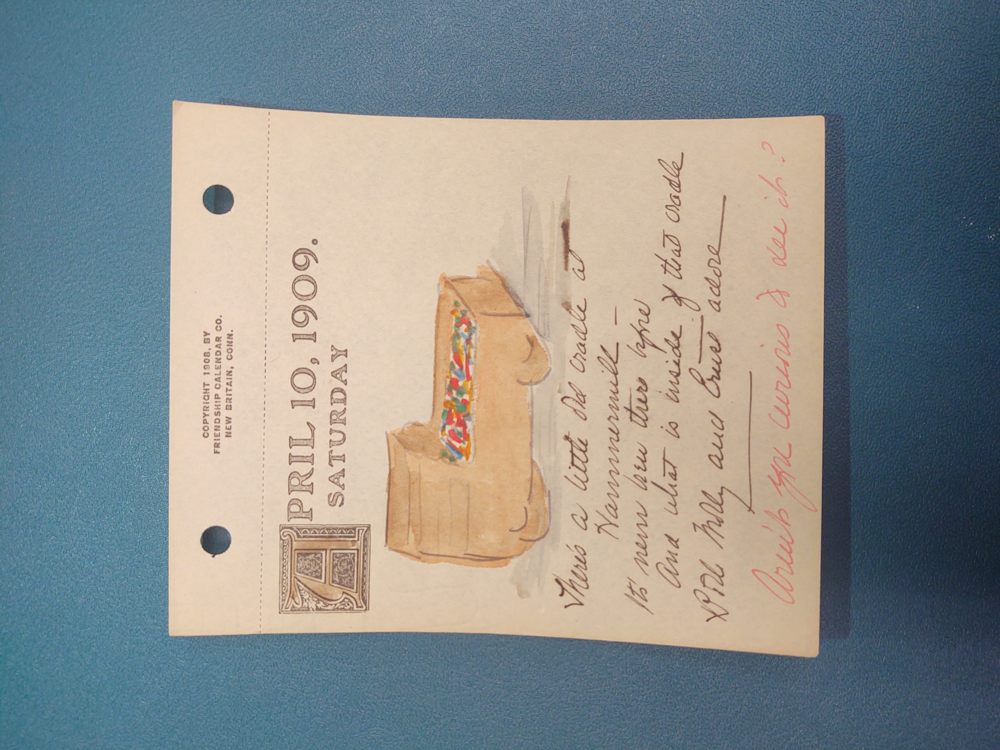

 The image is of a baby cradle with a
colorful blanket inside it. The cradle has a canopy over where the
baby's head would be. It also appears to be made out of wood.—#lhering
April 10, 1909. Saturday
There's a little old cradle at Hammermill -
It's never been there before And what is inside of that cradle
Both Molly and Ernst adore
Aren't you curious to see it?
It appears that Mr. and Mrs. Behrend had a
child somewhat recently and that is what this calendar page is about.—#lhering